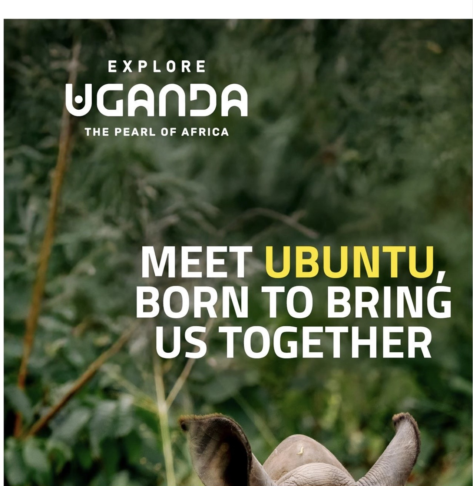
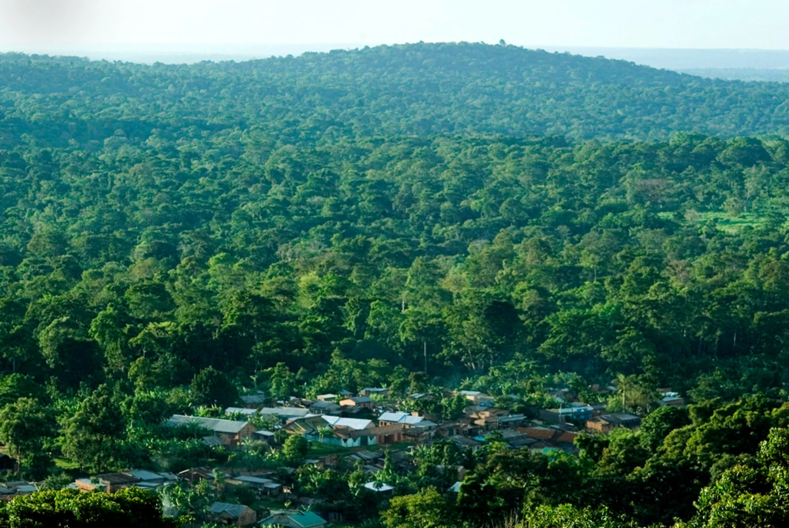

Hello, Welcome to my page

Hello, I'm Waziri, a passionate Computer Science student
dedicated to harnessing technology for positive social
and environmental impact.
Growing up in Uganda, I've witnessed firsthand the devastating
effects of rapid deforestation — currently claiming around
27,000 hectares of natural forest annually (as reported by
Global Forest Watch in recent years) — driven largely by
agricultural expansion, charcoal production, and population pressures.
This loss not only threatens biodiversity and contributes
to climate change but also undermines the livelihoods of
rural communities that depend on healthy ecosystems.
My long-term vision is to develop innovative, tech-enabled
solutions that empower smallholder farmers across Uganda
to adopt sustainable agroforestry practices.
By integrating trees into their farming systems, these farmers
can restore degraded land, enhance soil fertility, boost food
security, and generate additional income through verified
carbon credits.
Projects like Trees for Global Benefit have already demonstrated
the potential: thousands of Ugandan households have planted
millions of trees, sequestered substantial amounts of CO₂,
and received direct payments from carbon markets — creating
a win-win model where environmental conservation directly
supports economic resilience and community well-being.
Through my work, I aim to bridge the gap between cutting-edge
technology — such as data-driven monitoring, mobile apps for
farmer training, and transparent carbon tracking — and the
real needs of rural Uganda.
Together, we can transform challenges into opportunities,
building a greener, more equitable future — one tree,
one farmer, and one line of code at a time.

If you want to read more about how carbon credits actually work, here's a good site: Gold Standard website.
Uganda & Deforestation
- 30,000 hectares of forest lost each year
- Main reasons are farming expansion and charcoal production
- Agroforestry can help fix the soil and give farmers extra income